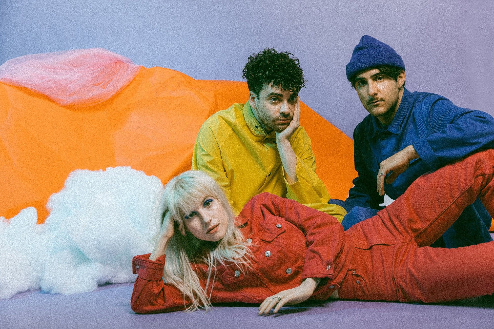

Paramore é uma banda americana de rock formada em Franklin, Tennessee no ano de 2004. A banda já lançou cinco álbuns de estúdio: All We Know Is Falling (2005), Riot! (2007), Brand New Eyes (2009), Paramore (2013) e After Laughter (2017). Destaca-se por suas performances ao vivo marcantes e suas músicas sempre cheias de identidade. O grupo permaneceu praticamente sem alterações de membros de 2004 a 2010, quando dois membros fundadores saíram. Os integrantes atuais são Hayley Williams, Taylor York e Zac Farro.
O álbum de estreia foi lançado em julho de 2005, o vídeo do single ‘Pressure’ foi lançado logo em seguida, e Paramore foi instantaneamente a conversa da cena pop punk/emo. All We Know Is Falling estabeleceu Paramore como uma das novas grandes bandas do pop-punk, mas Riot! (2007) os elevou ao escalão superior do rock alternativo em geral. É possivelmente o maior álbum de punk-pop mainstream do final dos anos 2000, e viu o Paramore se expandindo significativamente com o som de sua estreia. A produção é mais quente, com um som mais atemporal, e deu muito mais espaço para as canções do Paramore e a composição da banda foi muito mais variada. Já em 2009, o mundo do emo/pop punk/etc não era mais um lugar muito animado. Muitas das principais bandas haviam se separado, estavam perdendo vapor ou estavam passando por crises de identidade. Mas mesmo com todas as probabilidades trabalhando contra, Paramore prevaleceu e lançou mais um grande disco de rock alternativo com emoção e referências emo/punk, o Brand New Eyes (2009).
A banda acabou se separando dos irmãos Farro no ano seguinte à saída de Brand New Eyes, e eles demoraram alguns anos para se re-focalizar antes de começar a trabalhar em seu álbum auto-intitulado. Paramore (2013) não foi a reinvenção total que seu sucessor After Laughter seria, mas ajudou a definir o tom do salto que a banda daria naquele álbum. É uma espécie de disco de transição na discografia do Paramore, com traços de seu som clássico e dicas de para onde eles iriam em seguida. Paramore teve outra mudança após o álbum auto-intitulado com a saída do baixista de longa data Jeremy Davis, mas eles também receberam de volta um antigo membro: o baterista Zac Farro. Paramore sobreviveu à partida dos Farros, mas como mencionado anteriormente, Zac sempre foi sua arma não tão secreta, e seu retorno para After Laughter só confirmou mais uma vez isso. Com Taylor mais estabelecido em seu papel como o principal colaborador de Hayley, Zac de volta atrás do kit (e agora também fornecendo co-escrita, tons e backing vocals), e um novo foco em um pop new-wave, Paramore fez seu àlbum mais diferenciado até agora.